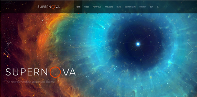

Favorite Website: Week 2
Supernova
This week, I chose the website theme "Supernova" produced by The Gravity, a small design studio. This particular page is actually a wordpress theme that they created for users to install on their own websites.
I was first drawn to the site by its bold and contrasting colors: I find that I'm immediately interested in sites with color schemes that pop. Upon loading the page I discovered a lot of features and elements that I enjoyed: the first page is split into different content sections that the user accesses by scrolling, and, much like my website choice from last week, the sections are visually divided by different background colors and a change of style.
As you scroll, the partially-transparent header bar becomes condensed into a thinner bar to take up less vertical screen space. At the top of the homepage, there's also a widget that scrolls between a few different 'screens' and cycles the text and background image depending on which screen is selected. The user is also given < and > buttons to be able to control which screen display they see.